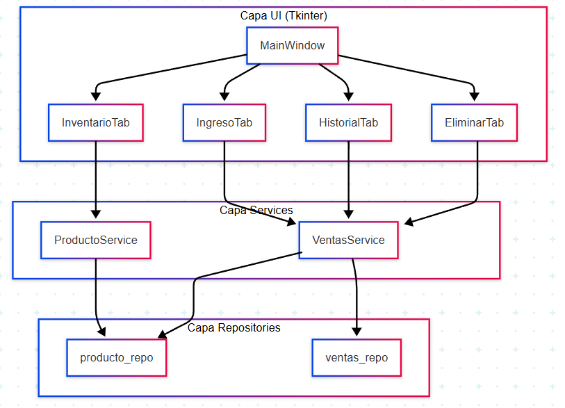
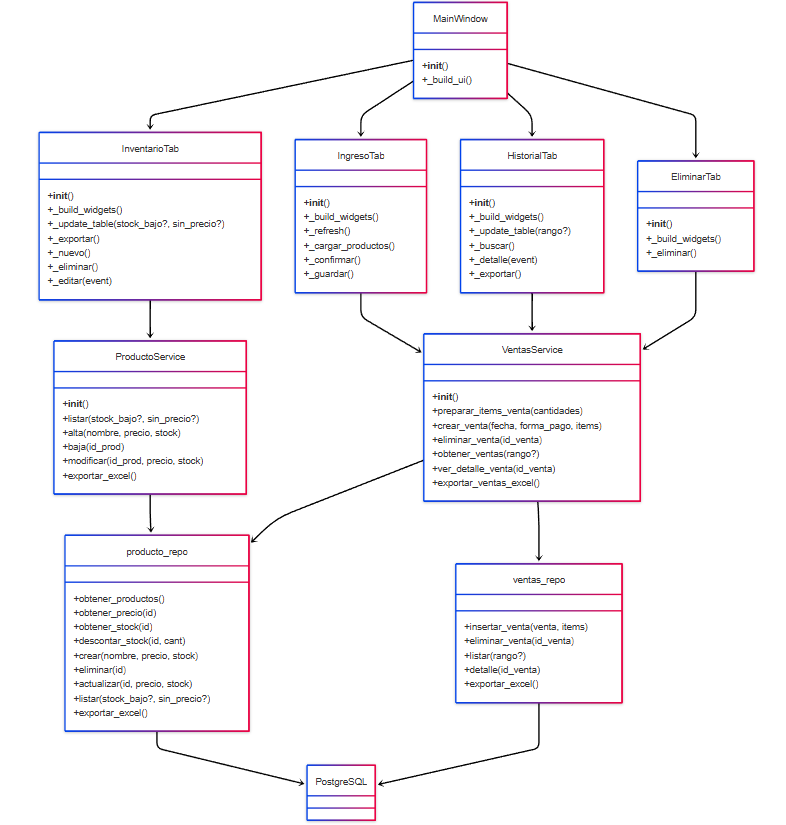

Arquitectura
Matex AdminDB está organizada en 4 capas bien separadas:
Diagrama de capas (Mermaid)

- UI (presentación):
Tkinter muestra pestañas y cuadros de diálogo; no contiene lógica de BD. - Services (negocio):
Validan reglas simples (stock disponible, totales con IVA) y orquestan varias llamadas a repos. - Repositories (persistencia):
Sentencias SQL directas usando psycopg2; sin reglas de negocio. - PostgreSQL:
Esquema en db/schema.sql (ver más abajo).
Diagrama simplificado de clases con Mermaid

Flujos de datos
| Paso | Acción | Origen → Destino |
|---|---|---|
| 1 | Usuario ingresa venta y pulsa Confirmar | IngresoTab → VentasService.preparar_items_venta() |
| 2 | Service valida stock y calcula IVA | VentasService |
| 3 | Usuario pulsa Guardar venta | VentasService.crear_venta() → ventas_repo.insertar_venta() + producto_repo.descontar_stock() |
| 4 | BD actualiza tablas ventas, ventas_producto, productos |
Repositorios → PostgreSQL |
| 5 | UI refresca tablas | IngresoTab llama a InventarioTab._update_table() |
Módulos y responsabilidades
| Módulo | Descripción | Tests (fase 3) |
|---|---|---|
ui/ |
Componentes Tkinter; sin SQL | Tests de integración con pytest-qt |
services/producto_service.py |
Reglas de stock y exportación | Unit tests con mocks |
services/ventas_service.py |
Transacciones de ventas; maneja stock y calculo de totales | Unit + integration |
repository/*_repo.py |
CRUD SQL puro | Tests con DB en contenedor |
repository/db.py |
Pool de conexiones (psycopg2) | Mock/stub en unit tests |
Esquema de base de datos
db/schema.sql
El script idempotente se mantiene ahi